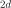
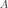
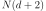
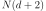
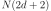
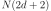
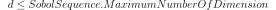

SobolIndicesExperiment¶
-
class
SobolIndicesExperiment(*args)¶ Experiment to computeSobol’ indices.
- Available constructors:
SobolIndicesExperiment(distribution, size, computeSecondOrder=True)
SobolIndicesExperiment(experiment, computeSecondOrder=True)
- Parameters
- distribution
Distribution Distribution
 with an independent copula used to generate the
set of input data.
with an independent copula used to generate the
set of input data.- sizepositive int
Size
 of each of the two independent initial samples.
For the total size of the experiment see notes below.
of each of the two independent initial samples.
For the total size of the experiment see notes below.- experiment
WeightedExperiment Design of experiment used to sample the distribution.
- computeSecondOrderbool, defaults to True
Whether to add points to compute second order indices
- distribution
See also
Notes
Sensitivity algorithms rely on the definition of specific designs. The method generates design for the Saltelli method. Such designs can be used for Jansen, Martinez and MauntzKucherenko methods. This precomputes such input designs using distribution or experiment by generating a sample of twice the dimension by duplicating the distribution into a  distribution with repeated marginals, in order to also work with non-iid samples such as those generated by
LHSExperimentorLowDiscrepancyExperiment. The sampling is done according to the given experiment, then it is split into samples  and and the columns of these ones are mixed to define the huge sample (design).
If computeSecondOrder is set to False, the result design is of size
 where
and the columns of these ones are mixed to define the huge sample (design).
If computeSecondOrder is set to False, the result design is of size
 where  is the dimension of the distribution.
If computeSecondOrder is set to True, the design size is , see
[saltelli2002], excepted in dimension 2.
If the constructor based on the distribution is used, an experiment is built
according to the value of ‘SobolIndicesExperiment-SamplingMethod’ in
is the dimension of the distribution.
If computeSecondOrder is set to True, the design size is , see
[saltelli2002], excepted in dimension 2.
If the constructor based on the distribution is used, an experiment is built
according to the value of ‘SobolIndicesExperiment-SamplingMethod’ in ResourceMap:If it is equal to ‘LHS’, a
LHSExperimentis used, with AlwaysShuffle and RandomShift set to TrueIf it is equal to ‘QMC’ and , a
LowDiscrepancyExperimentis used in conjunction withSobolSequence, with Randomize set to False. If is too large, it falls back to the ‘LHS’ case.Otherwise a
MonteCarloExperimentis used. It is the default choice in order to allowSobolIndicesAlgorithmto use the asymptotic distribution of the indices estimates.
The corresponding output values of a model can be evaluated outside of the platform.
Examples
>>> import openturns as ot >>> ot.RandomGenerator.SetSeed(0) >>> formula = ['sin(pi_*X1)+7*sin(pi_*X2)*sin(pi_*X2)+' + \ ... '0.1*((pi_*X3)*(pi_*X3)*(pi_*X3)*(pi_*X3))*sin(pi_*X1)'] >>> model = ot.SymbolicFunction(['X1', 'X2', 'X3'], formula) >>> distribution = ot.ComposedDistribution([ot.Uniform(-1.0, 1.0)] * 3, \ ... ot.IndependentCopula(3)) >>> size = 10 >>> experiment = ot.SobolIndicesExperiment(distribution, size, True) >>> sample = experiment.generate()
- Attributes
thisownThe membership flag
Methods
generate()Generate points according to the type of the experiment.
generateWithWeights(weights)Generate points and their associated weight according to the type of the experiment.
Accessor to the object’s name.
Accessor to the distribution.
getId()Accessor to the object’s id.
getName()Accessor to the object’s name.
Accessor to the object’s shadowed id.
getSize()Accessor to the size of the generated sample.
Accessor to the object’s visibility state.
hasName()Test if the object is named.
Ask whether the experiment has uniform weights.
Test if the object has a distinguishable name.
setDistribution(distribution)Accessor to the distribution.
setName(name)Accessor to the object’s name.
setShadowedId(id)Accessor to the object’s shadowed id.
setSize(size)Accessor to the size of the generated sample.
setVisibility(visible)Accessor to the object’s visibility state.
getWeightedExperiment
-
generate()¶ Generate points according to the type of the experiment.
- Returns
- sample
Sample Points
 which constitute the design of experiments
with
which constitute the design of experiments
with  . The sampling method is defined by the nature of
the weighted experiment.
. The sampling method is defined by the nature of
the weighted experiment.
- sample
Examples
>>> import openturns as ot >>> ot.RandomGenerator.SetSeed(0) >>> myExperiment = ot.MonteCarloExperiment(ot.Normal(2), 5) >>> sample = myExperiment.generate() >>> print(sample) [ X0 X1 ] 0 : [ 0.608202 -1.26617 ] 1 : [ -0.438266 1.20548 ] 2 : [ -2.18139 0.350042 ] 3 : [ -0.355007 1.43725 ] 4 : [ 0.810668 0.793156 ]
-
generateWithWeights(weights)¶ Generate points and their associated weight according to the type of the experiment.
- Returns
Examples
>>> import openturns as ot >>> ot.RandomGenerator.SetSeed(0) >>> myExperiment = ot.MonteCarloExperiment(ot.Normal(2), 5) >>> sample, weights = myExperiment.generateWithWeights() >>> print(sample) [ X0 X1 ] 0 : [ 0.608202 -1.26617 ] 1 : [ -0.438266 1.20548 ] 2 : [ -2.18139 0.350042 ] 3 : [ -0.355007 1.43725 ] 4 : [ 0.810668 0.793156 ] >>> print(weights) [0.2,0.2,0.2,0.2,0.2]
-
getClassName()¶ Accessor to the object’s name.
- Returns
- class_namestr
The object class name (object.__class__.__name__).
-
getDistribution()¶ Accessor to the distribution.
- Returns
- distribution
Distribution Distribution used to generate the set of input data.
- distribution
-
getId()¶ Accessor to the object’s id.
- Returns
- idint
Internal unique identifier.
-
getName()¶ Accessor to the object’s name.
- Returns
- namestr
The name of the object.
-
getShadowedId()¶ Accessor to the object’s shadowed id.
- Returns
- idint
Internal unique identifier.
-
getSize()¶ Accessor to the size of the generated sample.
- Returns
- sizepositive int
Number
 of points constituting the design of experiments.
of points constituting the design of experiments.
-
getVisibility()¶ Accessor to the object’s visibility state.
- Returns
- visiblebool
Visibility flag.
-
hasName()¶ Test if the object is named.
- Returns
- hasNamebool
True if the name is not empty.
-
hasUniformWeights()¶ Ask whether the experiment has uniform weights.
- Returns
- hasUniformWeightsbool
Whether the experiment has uniform weights.
-
hasVisibleName()¶ Test if the object has a distinguishable name.
- Returns
- hasVisibleNamebool
True if the name is not empty and not the default one.
-
setDistribution(distribution)¶ Accessor to the distribution.
- Parameters
- distribution
Distribution Distribution used to generate the set of input data.
- distribution
-
setName(name)¶ Accessor to the object’s name.
- Parameters
- namestr
The name of the object.
-
setShadowedId(id)¶ Accessor to the object’s shadowed id.
- Parameters
- idint
Internal unique identifier.
-
setSize(size)¶ Accessor to the size of the generated sample.
- Parameters
- sizepositive int
Number
of points constituting the design of experiments.
-
setVisibility(visible)¶ Accessor to the object’s visibility state.
- Parameters
- visiblebool
Visibility flag.
 associated with the points. By default,
all the weights are equal to
associated with the points. By default,
all the weights are equal to  .
.